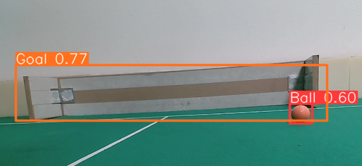
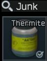
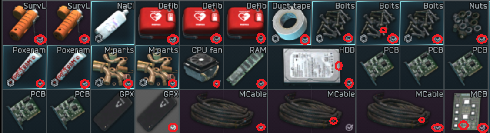
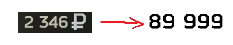

Computer Vision Projects
A collection of computer vision and automation projects using OpenCV, PyAutoGUI, YOLO object detection, and embedded edge AI hardware.
RoboCup SSL Blackout Challenge (University Project)
Skills: AI, Computer Vision, Pathfinding, Autonomous Decision Making
Challenge Description and Context
During the first year of my Master's program, two classmates and I completed a semester engineering challenge simulating real-world team deliverables: sprints, standups, objective releases, and code reviews. We chose a challenge proposed by Patrick Félix, professor at IUT de Bordeaux: an attempt at the RoboCup Small Size League (SSL) Blackout Challenge.
In standard SSL matches, an overhead global camera system tracks robots and the ball, providing ground-truth coordinates. In the Blackout Challenge, all external vision is eliminated—robots must be 100% autonomous and rely strictly on onboard sensors and vision.
- Find and recognize objects on the field (robots, ball, goals): COMPLETED
- Find, navigate toward, and kick the ball: COMPLETED
- Acquire ball and score a goal: COMPLETED
- Score a goal by passing the ball to a teammate: INCOMPLETE
We were constrained to run all compute on an onboard Nvidia Jetson Nano.
Implementation & Results
The challenge was completed using an onboard wide-angle camera coupled to a custom YOLOv8 model trained on domain-specific dataset images of the SSL pitch, obstacles, and ball.
By knowing real-world object dimensions and measuring bounding box dimensions in pixels at calibrated distances, we estimated depth and target vectors to compute approach speeds and kick velocities. Key hurdles included object permanence during high-speed turns and low-latency motor control through the RSK API.
Check out the source code, technical report, and video demos on our GitHub repository.


EFT Market Management & Trading Automation Bot
Skills: Computer Vision, OpenCV, Python Automation, Image Processing
A Need for Automation
Escape from Tarkov features a complex, player-driven flea market economy where players list in-game loot at market-clearing prices. With over 1,600 unique items and restricted market offer slots, manually listing inventory after gaming sessions became tedious and repetitive.
I took it upon myself to build an autonomous bot that navigates game menus, locates sellable items in the player stash, reads real-time market prices, and posts items dynamically at optimal prices.
Technical Architecture
The tool operates without an API, simulating mouse and keyboard interaction via PyAutoGUI. It uses OpenCV template matching and color thresholding to detect container boundaries, navigate nested sub-inventories, and track game states.
To read fluctuating item prices accurately against dynamic translucent backgrounds (such as animated menu elements), the script isolates specific RGB color channels into high-contrast grayscale masks before optical character recognition (OCR) parsing.



Source code and documentation are available on GitHub.
Disclaimer
This bot was built for educational purposes on version 0.13. Development was discontinued following account warnings from game administrators regarding third-party automation.